Tipos de flores | ||||
|---|---|---|---|---|
| Rosa | Clavel | Camelia | Clivia | Hibiscos |
| 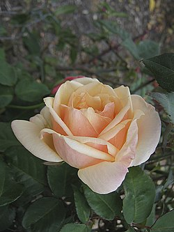 |  | 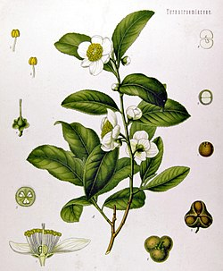 | 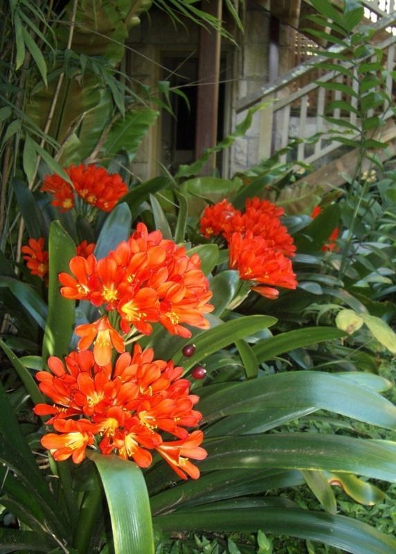 | 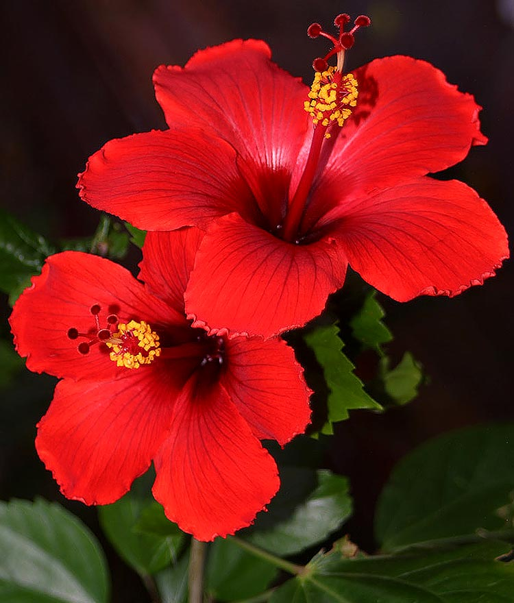 |
| Salvia | Nicotiana | Tulipán | Dahlia | Crisantemo |
| 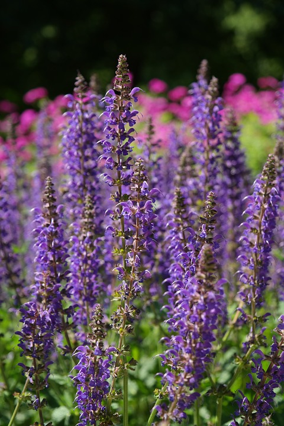 | 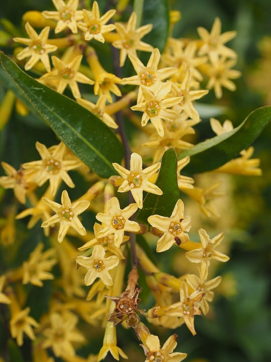 |  |  | |
| Cosmos | Anémona | Cala | Narciso | Amarilis |
| 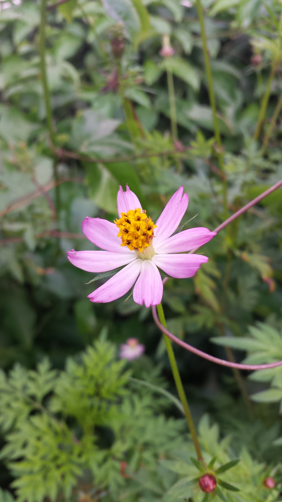 | 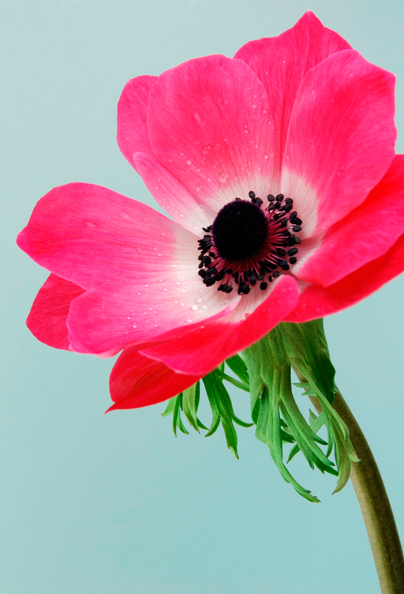 | 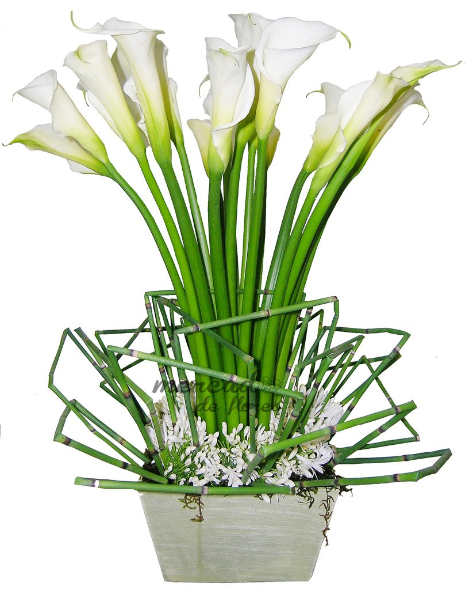 | 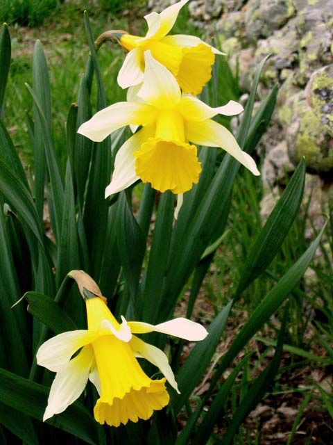 | 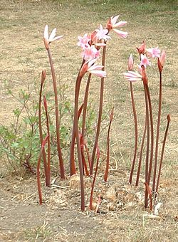 |
| Ciclamen | Prímula | Malvón | Ave del Paraíso | Pensamiento |
| 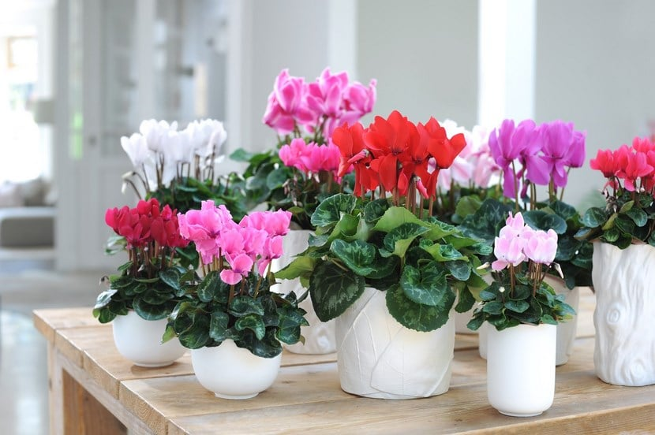 | 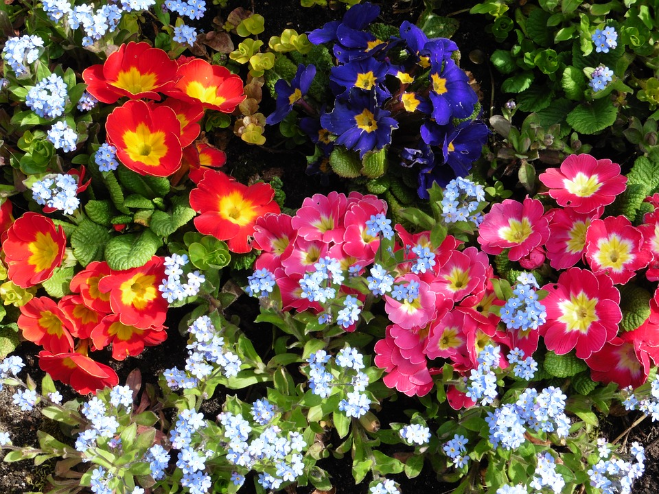 | 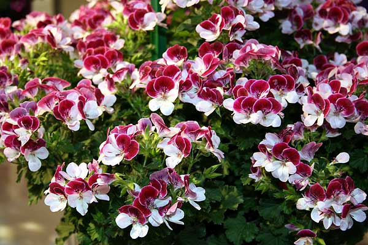 | 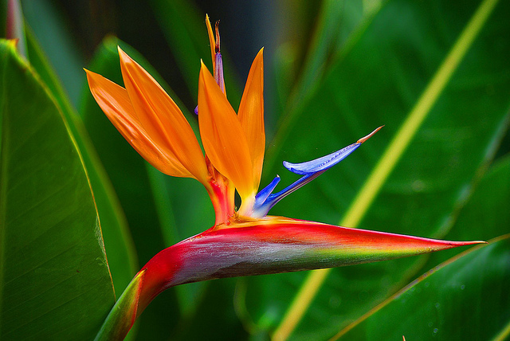 | 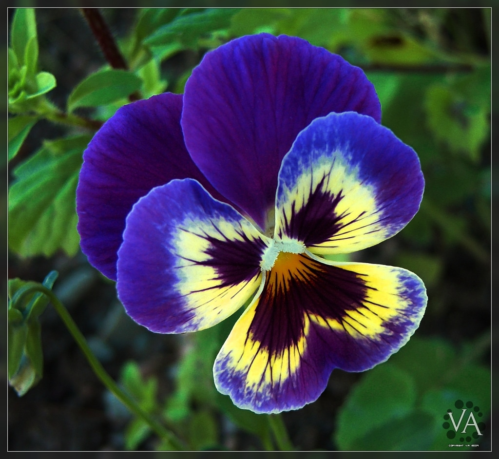 |
| Mimosa | Caléndula | Cassia | Lantana | Rododendro |